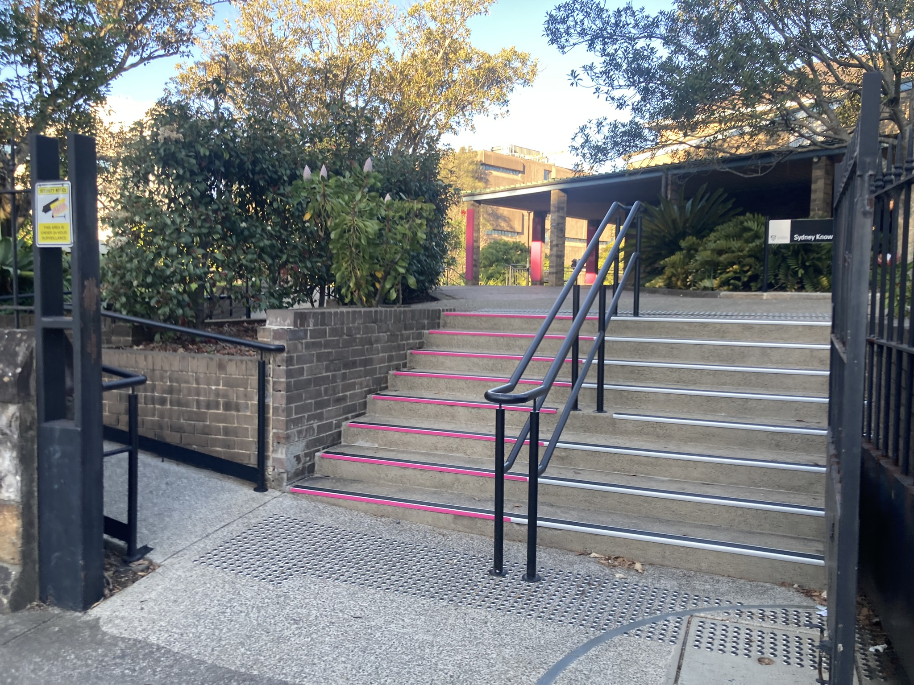

What to expect in a statistical consulting session
The basics
Most initial consults start with you providing a description of the background to your research, and your current research questions. This allows us to gain a working understanding of your project so that we can offer appropriate advice and support. Our consults are usually one hour long. We recommend an in-person consultation wherever possible, as we find the consulting process more effective face to face. Where an in-person consultation is not practical for you, we can meet virtually using Zoom or other AV conferencing software.
No assumed knowledge of statistics required
There is no minimum or maximum level of expected statistical knowledge required to have a consult with us. We help researchers improve their statistical literacy no matter what their current level of statistical knowledge. We do this by offering you tailored advice for applying statistical methods and directing you to appropriate learning resources, rather than doing analysis work for you.
How we help you
Our approach to helping you during a consult dovetails with the workflows that we have developed as an educational resource. We have a ‘general research workflow’ (shown below) which outlines the typical phases in any quantitative research project, and ‘statistical workflows’ which outline the practical steps we recommend when using various statistical methods. Many of the statistical workflows also have software workflows that show how to apply the methods in common statistical software packages such as R and SPSS. We describe and explore our workflows in depth during our training workshops, which are open to all researchers (including honours and postgraduate research students) from the University of Sydney.

We welcome consults from any researchers and eligible research students from across the university, at any stage of the general research workflow. Where possible we encourage you to engage with us prior to data collection so that we can aid you in optimising your study design.
How to prepare for a consult
Review the general research workflow above to identify the stage of the workflow you are currently at. Consider bringing the following information listed below to the consult where available:
- Steps 1 & 2: A list of clearly defined research questions and a draft study design including relevant variables (explanatory, design and outcome variables).
- Steps 3-5: A description of the variables for which you intend to collect data, some example data or your full dataset. A description of the variables required for your analysis.
- Step 6: A proposed analysis plan. The results of your exploratory data analysis.
- Step 7 & 8: Output from your analysis
If you don’t know how to prepare the above information, consider attending the Research Essentials workshop, which goes through the general research workflow in detail.
How to request a consult
Find out how to contact us to request a consult
Where to go for an in-person consult
For an in-person consult, please be at the Sydney Knowledge Hub reception in the Merewether building (H04) five minutes prior to the consult start. The reception is on the second level of the building and can be accessed from City Road or Butlin Ave. You can use the Sydney Uni app to get walking directions, navigate to Merewether room 230 (room ID for reception).
Sydney Knowledge Hub Reception

Stairs to Sydney Knowledge Hub Reception from City Rd
Stairs to Sydney Knowledge Hub Reception from Butlin Ave
See you in the consult!
We look forward to chatting with you about your research during a consult. We continue to learn so much from researchers about the fascinating research taking place at Sydney University. It is a privilege to learn about your research and to contribute to your work by providing you with statistical support.